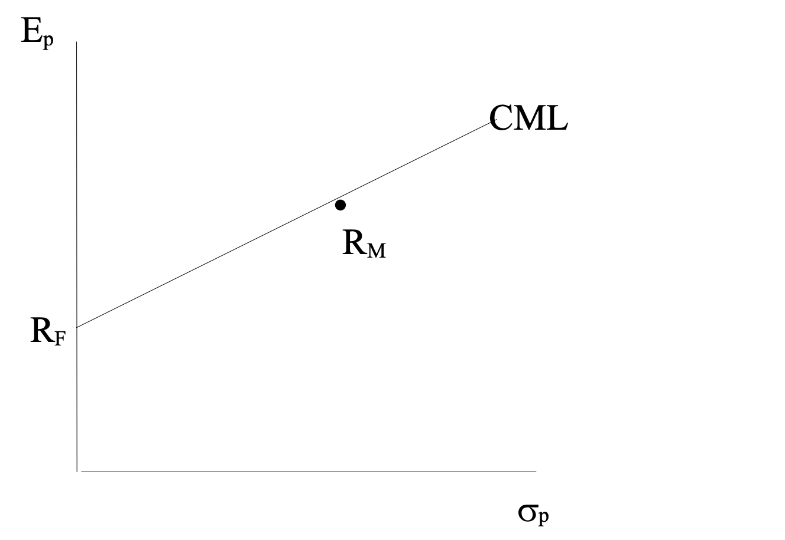

Año 2021
Examen diciembre
- Incorporar seguros de accidentes dentro del proceso de planificación financiera es importante porque:
- Son otra clase de activo y la cartera debe estar diversificada
- Sirven para cubrir riesgos que pueden afectar la capacidad de ahorro
- Sirven para cubrir riesgos que pueden afectar la rentabilidad de las inversiones
- Si se produce el siniestro, pueden ser una atractiva fuente de rentabilidad
La respuesta correcta es la b.
- Indique cuál o cuáles de los siguientes derechos corresponden al tomador del seguro:
- Resolver el contrato
- Ceder y pignorar los derechos sobre el contrato
- Pagar la prima del seguro.
- Solicitar el cobro de la prestación cuando, además, sea el beneficiario del seguro.
- I y III
- Sólo la I
- De I, II y IV
- Solo la II
La respuesta correcta es la c.
Según lo establecido en el artículo 99 de la Ley de Contrato de Seguro:
“El tomador podrá, en cualquier momento, ceder o pignorar la póliza, siempre que no haya sido designado beneficiario con carácter irrevocable.
La cesión o pignoración de la póliza implica la revocación del beneficiario. Si la póliza se emite a la orden, la cesión o pignoración se realizarán mediante endoso.
El tomador deberá comunicar por escrito fehacientemente al asegurador la cesión o pignoración realizada”.
- En el contexto de las obligaciones de identificación de clientes, ¿cuál de los siguientes documentos prueba de manera más fehaciente la identidad de una persona jurídica?
- Las cuentas anuales auditadas.
- Una copia del modelo censal 036 en el que conste el CIF de la empresa.
- La escritura pública de constitución de la sociedad porque acredita su existencia y contiene su denominación social, forma jurídica, domicilio de la identidad, los estatutos y el número de identificación fiscal de sus administradores.
- Una copia de la última declaración del Impuesto sobre Sociedades presentado.
La respuesta correcta es la c.
¿Cuáles son las obligaciones de diligencia debida en el caso de operaciones que no sean de compraventa minorista?
En este caso se deberán aplicar las medidas normales de diligencia debida que regula la Ley 10/2010, de 28 de abril. Estas incluyen:
Identificación formal de la persona jurídica y de la persona física que la representa.
Identificación del titular real. Se entiende por titular real la persona natural que controla la persona jurídica, bien por tener más de un 25 % de las acciones o derechos de voto, o bien mediante otros mecanismos.
Información sobre la naturaleza de la actividad profesional o empresarial del cliente.
¿Qué documentos son fehacientes para la identificación de personas jurídicas?
Las personas físicas (incluyendo los administradores de las personas jurídicas) se identificarán conforme a los documentos fehacientes anteriormente relacionados. En el caso de las personas jurídicas la identificación se realizará mediante:
Documentos públicos que acrediten su existencia y contengan su denominación social, forma jurídica, domicilio, la identidad de sus administradores, estatutos y número de identificación fiscal.
En el caso de personas jurídicas de nacionalidad española será admisible la certificación del Registro Mercantil provincial, aportada por el cliente u obtenida mediante consulta telemática.
- ¿Qué tipo de órdenes NO pone limite a la cotización de las acciones y barre todas las posiciones hasta agotar el volumen solicitado en la operación?
- Orden limitada
- Orden por lo mejor
- Orden de mercado
- Orden fuera de mercado
La respuesta correcta es la c.
Una orden de mercado es aquella orden que se envía sin precio de compra o venta. No existe límite de precio, y se ejecutará al mejor precio de contrapartida existente, acudiendo al siguiente mejor precio de contrapartida si no hubiera títulos suficientes para cubrir el volumen de la orden; es decir, es una orden que barre posiciones. Por tanto, es probable que la orden se ejecute a diferentes precios, sobre todo si el volumen de títulos que queremos negociar es muy elevado, o en valores poco líquidos. Es una orden adecuada en situaciones donde queremos comprar o vender el valor inmediatamente a cualquier precio, y se trate de un valor suficientemente líquido.
- En qué supuesto NO se basa el modelo de Markowitz
- El rendimiento de cualquier título o cartera es una variable aleatoria cuya distribución es conocida por el inversor. El valor medio de esa variable es aceptado como rentabilidad esperada.
- Se acepta como medida de la eficiencia, la dispersión de las series de rentabilidades históricas medida por la varianza o la desviación estándar.
- El inversor toma una decisión de inversión para todo el período (no es dinámica).
- La conducta del inversor le lleva a preferir aquellas carteras con un mayor rendimiento y un menor riesgo.
La respuesta correcta es la b.
Se acepta como medida de riesgo, la dispersión de las series de rentabilidades históricas medida por la varianza o la desviación estándar.
- ¿Cuál de los siguientes elementos NO debe tenerse en cuenta para una adecuada planificación financiera de la jubilación?
- El gasto estimado del inversor a partir de la fecha de acceso a la jubilación.
- Los productos financieros de ahorro-jubilación ofrecidos por otras empresas de la competencia.
- Otros ingresos complementarios que se espera obtener a partir de la fecha de acceso a la jubilación
- La pensión pública de la Seguridad Social que se espera percibir a partir de la fecha de jubilación
La respuesta correcta es la b.
Debe tenerse en cuenta para una adecuada planificación financiera de la jubilación: * El gasto estimado a partir de la fecha de acceso a la jubilación, * otros ingresos complementarios, * y la pensión pública
- Un cliente realiza la siguiente operación en el mercado de opciones: operación de call llevada hasta la fecha de vencimiento y liquidada por compra-venta de una opción diferencias
- Compra de call ATM con prima 5
- Precio de ejercicio 21 euros
- Entre la compra y la liquidación final de la opción, el subyacente ha caído un 15%
¿Qué rentabilidad habrá obtenido de la operación con opciones?
- -127,50%
- -100%
- -110,25%
- 27,50%
La respuesta correcta es la b.
Pierde 5€ ya que no ejecuta la opción al vencimiento por estar OTM.
- Los países más avanzados de la OCDE fomentan la previsión social complementaria mediante un sistema estructurado en:
- Un único pilar, integrado por los el sistema de prestaciones públicas de la Seguridad Social.
- Dos pilares: el Pilar a, integrado por el el sistema de prestaciones públicas de la Seguridad Social, y 2, el Pilar integrado por los planes de pensiones de empleo.
- Tres pilares: el Pilar 1, integrado por el el sistema de prestaciones públicas de la Seguridad Social; el Pilar 2, integrado por los planes de pensiones de empleo, y el Pilar 3, integrado por los planes de pensiones individuales
- Un único pilar, integrado por sistemas de previsión públicos y privados, basados en técnicas de capitalización financiera individual.
La respuesta correcta es la c.
Las pensiones públicas, los planes de empleo y los planes de pensiones individuales forman parte de los llamados pilares del sistema de pensiones.
- Una sociedad de inversión inmobiliaria (SOCIMI), cotizada:
- Esté siempre exenta del impuesto de sociedades.
- Esté exenta del impuesto de sociedades si cumple una serie de requisitos.
- No está obligado a repartir dividendos
- Tiene muy poca liquidez
La respuesta correcta es la b.
- Una acción con una rentabilidad exigida del 8% una volatilidad del 25%, tiene una beta con el mercado del 0,95. Si la rentabilidad del activo libre de riesgo es del 2,5%, ¿cuál será la rentabilidad esperada del mercado?
- 0,1
- 0,0625
- 0,075
- 0,0829
La respuesta correcta es la .
- La asignación táctica de activos…
- Permite a los gestores la obtención de un extra de rentabilidad gracias a ciertas situaciones que se producen en los mercados financieros.
- Minimiza los riesgos del plan de inversión al reequilibrar los pesos de la clase de activos en función de las previsiones a largo plazo
- Implica el reequilibrio periódico del plan de inversión basado en reglas automáticas, según lo establecido adecuadamente por el asesor
- Tiene que ver con el perfil y objetivos del cliente y las perspectivas a largo plazo de rentabilidad de los activos.
La respuesta correcta es la c.
- En el año 2021, ¿qué inversión máxima puede realizarse a un plan de pensiones del sistema individual?
- 8.000 euros
- 10.000 euros
- 2.000 euros
- 3.000 euros
La respuesta correcta es la .
- Ante expectativas de subidas importantes en los tipos de interés, un gestor nos ofrece distintos bonos, todos con la misma TIR. ¿Por cuál de ellos deberá decantarse?
- Bono cupón cero del 5% a 5 años
- Bonos con cupones del 5% anual pagaderos trimestralmente a 5 años
- Bonos con cupones anuales del 5% a 5 años
- Por cualquiera de los tres, ya que tiene la misma TIR e igual vencimiento
La respuesta correcta es la .
- El fondo de inversión K ha logrado un rendimiento anual promedio de 12%, y una alfa K en de Jensen de 3%. El fondo J, que pertenece a la misma categoría que el fondo cambio, ha alcanzado un rendimiento anual promedio del 11% y una alfa de Jensen del 45%. El índice de referencia de ambos fondos registró un rendimiento anual promedio del 10%, superando al activo libre de riesgo, que proporcionó una remuneración del 1%. ¿Cuál de las siguientes afirmaciones es correcta con referencia a la situación descrita?
- Tanto el fondo K como el fondo J son fondos defensivos al tener beta menor 1
- Tanto el fondo K como el fondo J fueron fondos agresivos al tener una beta mayor que 1
- El fondo K es más defensivo que el fondo J
- Tanto el fondo K como el fondo J pueden definirse como fondos indexados
La respuesta correcta es la .
- El tipo de interés del dólar de Estados Unidos a un año es del 1%, y el del dólar canadiense para el mismo período es del 0,25%. El tipo de cambio al contado es USD/CAD 1,35. Calcular el seguro de cambio a un año entre estas dos divisas:
- USD/CAN 1,37
- USD/CAN 1,34
- USD/CAN 1,25
- USD/CAN 1,39
La respuesta correcta es la .
- Una empresa descuenta una factura comercia de nominal 58000 euros y vencimiento a 270 días aplicando un descuento comercial del 8,50%. La cuantía efectiva que percibirá la empresa en el momento del descuento será:
- 54.302,50 euros
- 61.697.50 euros
- 54.353,15 euros
- 57.411,65 euros
La respuesta correcta es la .
- Como consecuencia del fallecimiento de su padre, Miguel Ángel ha recibido un piso situado en la localidad de Fuensalida (Toledo). ¿Por qué valor deberá declarar el citado inmueble en la liquidación del Impuesto sobre Sucesiones y Donaciones?
- Por el valor de adquisición que fue satisfecho por el causante.
- Por el valor catastral en la fecha de fallecimiento de su padre.
- Por el valor de mercado en la fecha de fallecimiento de su padre.
- Por el valor comprobado por la Hacienda Pública a efectos de otros tributos.
La respuesta correcta es la .
- Indique cuál de las siguientes rentas quedará sometida a gravamen en el Impuesto sobre la Renta de no Residentes si las mismas son percibidas por una persona física con residencia fiscal en Italia:
- Intereses de obligaciones del Estado. Il. Dividendos pagados por una empresa cotizada en la bolsa de Nueva York.
- Rentas procedentes del alquiler de un apartamento en Palma de Mallorca.
- I y III
- Sólo la III
- I, II y III
- I y II
La respuesta correcta es la .
- ¿Cuál es la cuota mensual de un préstamo de 67000 euros a 48 meses, tipo de interés 9,75% anual, método de amortización sistema francés?
- 1.691,26
- 1.511,92
- 1.840,30
- 1.613,20
La respuesta correcta es la .
- ¿Por qué importe debe declararse en el Impuesto sobre el Patrimonio un seguro en el que se ha designado beneficiario irrevocable a una persona distinta del tomador?
- Por su valor de rescate
- Por el importe de la prima o primas satisfechas por el tomador.
- Por el valor de las provisiones matemáticas que proporcionalmente correspondan al tomador.
- Por su valor nominal
La respuesta correcta es la .
- Fernando, residente fiscal en París (Francia), ha recibido una donación de su padre, residente fiscal en Galicia. El objeto de la donación es un apartamento situado en Gijón (Asturias).
¿Qué normativa autonómica deberá aplicarse para calcular la cuota que Fernando deba satisfacer por el Impuesto sobre Sucesiones y Donaciones?
- Normativa de la Comunidad de Galicia.
- Normativa de la Comunidad de Asturias.
- Normativa estatal
- Fernando podrá optar entre aplicar la normativa e estatal o la normativa de la Comunidad de Asturias.
La respuesta correcta es la .
| 23. De acuerdo con el enfoque del ciclo de vida, la estructura de la cartera de inversiones financieras del inversor es: |
| a. Una constante en el tiempo b. Totalmente monetaria cuando el inversor entra en el mercado de trabajo c. Gradualmente más agresivo cuando se acerca la jubilación d. Gradualmente más conservadora cuando de acerca la jubilación |
| ::: {.FOO .callout-tip appearance=“simple”} La respuesta correcta es la . ::: |
- Utilizando estos datos calcular la ratio de Sharpe del Fondo A.
- Rentabilidad anual media fondo 8%
- Rentabilidad anual media del mercado 10
- Rentabilidad anual activo libre de riesgo 2%
- Beta del activo 0,5%
- Volatilidad del activo 7%
- Volatilidad del mercado 6%
- 0,86
- -0,28
- 1
- 0,12
La respuesta correcta es la .
- Indique cuál de los siguientes seguros pertenece a los denominados seguros de protección de patrimonios:
- Seguro de decesos
- Seguro de rentas vitalicias
- Seguro de accidentes
- Seguro de crédito y caución
La respuesta correcta es la .
- Conociendo los siguientes datos de una empresa:
- BDI = 500 millones de euros
- Fondos propios=1,500 millones de euros
- Pay-out de 30%
- PVC = 2,0
Calcular el PER.
- 10,5
- 9.5
- 6
- 75
La respuesta correcta es la .
- ¿Cuál de las siguientes opciones NO es correcta con respecto a la naturaleza de una distribución normal?
- Cuanto mayor sea la volatilidad más “achatada” será la curva.
- El 68% de los casos están recogidos en un rango delimitado por más/menos una desviación típica
- La media es el centro de la función
- El 5% de los casos estarán entre un rango definido por la media más dos desviaciones típicas e infinito
La respuesta correcta es la .
- Indique cuál de las siguientes afirmaciones relativas al Fondo de Garantía de Inversiones (FOGAIN) es correcta:
- El FOGAIN sólo permite que los clientes de las empresas de servicios de inversión adheridas recuperen el efectivo de la inversión, pero no los valores en que la misma se haya materializado.
- El FOGAIN no cubre las pérdidas de valor como consecuencia del funcionamiento de los mercados ni por insolvencia del emisor.
- El POGAIN cubre hasta un máximo de 200.000 euros por inversor.
- La cobertura del FOGAIN opera partir de fecha en que la empresa de servicios de inversión haya incurrido en dificultades financieras, sin necesidad de que la CNMV declare administrativamente que la empresas no puede cumplir con las obligaciones contraídas con sus clientes por razones relacionadas con su situación financiera.
La respuesta correcta es la .
- ¿Cual de las siguientes afirmaciones sobre el mercado de opciones es correcta?
- Si el precio de ejercicio de la Call euros y la prima es de 1 euro, el punto muerto de la opción para el comprador es de 10 euros
- Si el precio de ejercicio de una Call es 11 euros y la prima es de 1 euro y a vencimiento el precio del subyacente es de 11,5 euros, el comprador ejercerá la Call
- Si el precio de ejercicio de una Call es 11 euros, la prima pagada es subyacente es de 11,5 euros, el comprador de la Call no la ejercerá euro y a vencimiento el precio del
- El Comprador de una Call de estilo europeo puede ejercer la opción en cualquier momento
La respuesta correcta es la .
- Cuál es la diferencia sustancial entre el ratio de Treynor y el de Sharpe
- La consideración del riesgo sistemático
- La consideración del riesgo diversificable
- La valoración de la rentabilidad de la gestión
- La valoración de la duración de la inversión
La respuesta correcta es la a.
- Las cuotas de renting llevan incluidos:
- Capital
- Intereses
- IVA
- Seguros y otros suplidos
- Solamente I, II y IV
- Solamente I y II
- Solamente I, II y II
- I, II, III y IV
La respuesta correcta es la .
- ¿En qué casos no es obligatorio realizar el test de idoneidad cuando se presten servicios de asesoramiento en materia de inversiones?
- Cuando el cliente sea minorista
- Cuando el cliente autorice por escrito a la empresa de servicios de inversión a no realizar el test de idoneidad.
- Cuando el cliente esté clasificado como cliente profesional o sea una contraparte elegible.
- Cuando el cliente tenga acreditado haber realizado anteriormente un volumen mínimo de operaciones sobre las que ya haya recibido asesora miento financiero.
La respuesta correcta es la .
- Ante la previsión de un ascenso generalizado de las cotizaciones en el mercado, un t.ar agresivo optará por:
- Valores con beta mayor que 1
- Valores con beta menor que 1
- Valores con igual a 1
- Valores con baja volatilidad
La respuesta correcta es la .
- Si queremos eliminar el riesgo de tipo de interés en una inversión de renta fija, deberemos invertir en una cartera de bonos cuya duración sea:
- Igual al horizonte temporal de la inversión
- Igual a la esperanza de vida del inversor
- Inferior al horizonte temporal de inversión
- Superior a la esperanza de vida del inversor
La respuesta correcta es la .
- Las acciones de la empresa GAMMA tienen un PER de 7. Se espera un beneficio neto de 20 millones de euros correspondiente a 5 millón de acciones en circulación, ¿cuál es el precio unitario de las acciones de la empresa?
- 28,00 euros
- 1,75 euros
- 4,00 euros
- 140,00 euros
La respuesta correcta es la .
- ¿Si el fondo de renta variable A tiene un valor active share del 20% nos indica?
- El rendimiento bruto anual del fondo
- El diferencial de la rentabilidad entre el fondo y su benchmark
- Nos dice que es un fondo gestionado activamente.
- Indica que tiene un 80% de valores comunes con su benchmark
La respuesta correcta es la d .
Para medir cuán activa es la gestión de una cartera se utiliza el Active Share, que es el porcentaje de variación entre los pesos de cada posición en la cartera del fondo y la ponderación de los componentes del índice de referencia.
Un fondo que no tenga ninguna posición en común con el índice de referencia tendrá un active share del 100 por ciento, y un fondo que tenga exactamente las mismas posiciones que los componentes del índice de referencia considerado tendrá un active share del 0 por ciento.
Si un fondo tiene un active share del 20 por ciento, entonces el 80 por ciento de sus posiciones son idénticas a las del índice de referencia, y el 20 por ciento son diferentes (pueden ser tanto sobre ponderaciones como infra ponderaciones con respecto a los componentes del índice de referencia).
Cuanto más alto sea el dato, más activamente estará siendo gestionado el fondo. Cuanto más se acerque al 100%, más activo será el fondo, y cuanto más se acerque a cero, más pasivo será.
El active share es un dato relativamente nuevo, que está siendo muy tenido en cuenta por parte de unos inversores cada vez más sensibilizados con la importancia del coste en la rentabilidad final del producto y con el hecho de no pagar comisiones de gestión activa por productos que, en realidad, estén pegados al benchmark.
Es por la mayor sensibilidad al coste del producto por lo que la importancia del active share se ha incrementado notablemente y por lo que muchos gestores, en sus reuniones con clientes, sacan a relucir este dato. Lo que el inversor debe tener claro para entender el active share es que la clave está en el 60%. Un active share por debajo de 60% indica una gestión demasiado pegada al índice. Por encima del 60%, muestra una cartera muy diferente a la del benchmark.
Fuente:
https://fundspeople.com/es/glosario/guia-para-entender-correctamente-que-es-el-active-share/
- Un asesor dispone de la siguiente información sobre el mercado y la empresa CDA:
- Tipo de interés libre de riesgo: 1,5%
- Prima de riesgo del mercado: 5,0%
- Volatilidad anual de la acción CDA: 25%
- Volatilidad del mercado: 33%
- Covarianza: 0.200
¿Cuál será el coste de capital de la empresa?
- 17,50%
- 4,53%
- 10,68%
- 7,93%
La respuesta correcta es la .
Examen septiembre
- Recientemente el Banco Central Australiano tomó la decisión de subir el tipo de interés de referencia un 1% en las próximas semanas. ¿Cómo se comportará el dólar australiano?
- Se depreciará la divisa debido a la compra de dólares australianos por parte de inversores extranjeros para poder invertir en depósitos australianos
- Permanecerá inalterado el tipo de cambio, debido a que la entrada y salida de flujos de caja se compensaran
- Se apreciará un 1%
- Se apreciará la divisa debido a la compra de dólares australianos por parte de inversores extranjeros para poder invertir en depósitos australianos
La respuesta correcta es la .
- Indique cuál de las siguientes afirmaciones relativas a los servicios de asesoramiento financiero es correcta:
- El servicio de asesoramiento financiero se caracteriza por la presentación al convenientes para él sobre instrumentos financieros
- El servicio de asesoramiento financiero puede versar exclusivamente sobre instrumentos no cotizados
- El servicio de asesoramiento se caracteriza por la presentación al cliente de recomendaciones de carácter personalizado e idóneas sobre instrumentos financieros
- Ninguna de las respuestas es correcta
La respuesta correcta es la .
- Un contribuyente del IRPF ha percibido las siguientes rentas en el ejercicio en curso:
- Dividendos de acciones cotizadas: 5.000 euros
- Pérdida patrimonial derivada de la venta de las anteriores acciones: - 10.000 euros
¿A cuánto ascenderá la base imponible delahorro de este contribuyente?
- 3.750 euros
- -5.000 euros
- 5.000 euros
- 8.750 euros
- El Sr. García, con residencia fiscal en Galicia, ha fallecido en el presente ejercicio dejando a su única hija Manuela, residente fiscal en Andalucía, un inmueble situado en Cataluña. A
¿Qué normativa autonómica deberá aplicarse para calcular la cuota del Impuesto sobre Sucesiones y Donaciones que deberán satisfacer los herederos?
- Normativa de la Comunidad de Cataluña
- Normativa de la Comunidad de Galicia
- Normativa de la Comunidad de Andalucía
- Normativa de Galicia o de Cataluña, a elección del sujeto pasivo
La respuesta correcta es la .
- Un banco español negocia un contrato forward a 6 meses con un importador por el cual compromete a venderle 40 millones de libras a 6 meses a un tipo de cambio de EUR/GBP 0,80 (0,80 libras esterlinas por euro). Si transcurridos los 6 meses el tipo de cambio al contado es de EUR/GBP 0,85 ¿Cuál será el resultado de la operación para el banco?
- -2000000
- -2941176
- 2000000
- 2941176
La respuesta correcta es la .
- Una cartera tiene una rentabilidad media del 8,2% con una desviación estándar del 1,6% Según dicha información y asumiendo una distribución normal, ¿cuál será el rango esperado de la rentabilidad media con dos desviaciones estándar?
- 5,0% a 8,2%
- 5,0% a 11,4%
- 6,6% a 8,2%
- 6,6% a 9,8%
La respuesta correcta es la .
- Al hacer la valoración de un fondo por medio de un rating, se debe tener en cuenta:
- La vocación inversora del fondo
- La volatilidad obtenida en el último mes
- Las rentabilidades obtenidas en los dos últimos años
- La consistencia de sus resultados rentabilidad/riesgo a lo largo del tiempo
- Solamente I y III son correctas
- Solamente I, y IV son correctas
- Solamente II y IVA son correctas
- Solamente I y II son correctas
La respuesta correcta es la .
- ¿Cuál es la cuota mensual de un préstamo de 39000 euros a 60 meses, tipo de interés 9,90% anual, método de amortización sistema francés?
- 826,72
- 714,35
- 907,40
- 860,14
La respuesta correcta es la .
- ¿Cuál de los siguientes aspectos es probable que tenga mayor impacto en las recomendaciones estratégicas a largo plazo que el asesor financiero realiza a su cliente?
- Un aumento en el tipo impositivo
- Una pandemia
- La tolerancia del cliente a la volatilidad en el corto plazo
- Un aumento en el tipo de cambio del euro
La respuesta correcta es la .
- Dada la siguiente información del mercado interbancario de depósitos, ¿cuál será el tipo implícito 3/6? (Es decir, para una operación por tres meses que se realizará dentro de tres meses)
- Tipos a 1 mes: 0,45%
- Tipos a 2 meses: 0,54%
- Tipos a 3 meses: 0,65%
- Tipos a 6 meses: 0,85%
- Tipos a 9 meses: 0,98%
- 1,010%
- 1,16%
- 0,98%
- 1,07%
La respuesta correcta es la .
- ¿Cuál o cuáles de los siguientes recargos están obligadas las compañías de seguros a recaudar por cuenta de terceros junto con la prima del contrato?
- Impuestos.
- Recargo del Consorcio de Compensación de Seguros.
- Recargo autonómico por ejercicio de la actividad aseguradora.
- Recargo de la Comisión Liquidadora de Entidades de Seguros.
- II y IV
- Sólo la III.
- I, III y IV
- I, I y IV
La respuesta correcta es la .
- Con los datos que se aportan sobre un bono:
- Próximo cupón anual = 30-04-2021
- Cupón nominal = 2,8%
- Amortización a la par y pago último cupón = 30-04-2024
- TIR = 3,20%
- Fecha valor actual = 30-04-2020
Se pide que calcule cuál será la cotización esperada.
- 100,000
- 101,859
- 98,52
- 97,114
La respuesta correcta es la .
- Calcular la tasa de descuento que debería haber en el mercado para que las acciones de una empresa que ha prometido un dividendo constante durante toda su vida de 2,5€, estén cotizando a 31,12€ en el momento actual.
- Menor que 9%
- 10%
- Entre 10% y 11%
- Mayor que 12%
La respuesta correcta es la .
- Indique cuál de las siguientes contingencias puede ser cubierta por un plan de pensiones:
- Invalidez
- Baja maternal
- Desempleo
- Dependencia
- Fallecimiento
- I y V
- I, IV y V
- I, III, IV y V
- Sólo la V
La respuesta correcta es la .
- Un asesor de inversiones está construyendo una cartera para un cliente minorista utilizando un enfoque de top-down. Habiendo determinado los sectores que tendrán más protagonismo, ¿cuál es generalmente el siguiente paso en el proceso?
- Aplicar una distribución geográfica
- Priorizar el estilo de inversión
- Seleccionar un índice de referencia relevante
- Seleccionar los fondos individuales
La respuesta correcta es la .
- En un fondo de fondos de inversión mobiliaria, en el que las IIC’s receptoras de las inversiones pertenecen al mismo grupo que la IIC inversora, la comisión de gestión sobre patrimonio del fondo inversor es del 1,30% y la de los fondos receptores del 1,40%. ¿Son válidas dichas comisiones?
- Si, porque ninguna de las dos supera el 2,25%.
- No, porque la comisión de los fondos receptores supera el 1,35%.
- Si, porque todos los fondos de fondos se consideran Hedge Funds, por lo que las comisiones son altas.
- No, porque la suma de las comisiones de gestión sobre patrimonio del fondo inversor y de los fondos receptores supera las comisiones legales máximas de los fondos de inversión mobiliaria (2,25%)
La respuesta correcta es la .
- En cuanto a las estrategias utilizadas por las Instituciones de Inversión Colectiva de Inversión Libre (IICIL) hedge fund la estrategia Distressed Securities:
- Es una estrategia de valor relativo
- Es una estrategia de fondos de futuros
- Es una estrategia de oportunidad
- Es una estrategia de eventos societarios
La respuesta correcta es la .
- ¿Qué medida de riesgo utiliza la ratio de Sharpe?
- La desviación típica
- La varianza
- La beta
- El coeficiente de correlación
La respuesta correcta es la .
- Indique cuál de los siguientes conceptos es un compromiso por pensiones apto para ser cubierto a través de un plan de pensiones de empleo:
- Jubilación
- Complemento por desempleo
- Asistencia médica
- Retribución variable (bonus)
La respuesta correcta es la .
- Una cartera de inversiones que incorpore el ciclo de vida del cliente:
- Coincidirá exactamente con la actitud del cliente hacia el riesgo
- Aumentará su exposición a renta fija en los primeros años
- Mantendrá una exposición equilibrada en todas las clases de activos a lo largo de su vic
- Reducirá su exposición al riesgo a medida que transcurra el tiempo
La respuesta correcta es la .
- Teniendo en cuenta la clasificación de los fondos de inversión por el tamaño de las compañías que lo componen, que afirmación es errónea en relación a los fondos de Small Cap:
- La estructura por sectores o estilos es menos importante que la habilidad del gestor para seleccionar las acciones que componen la cartera del fondo
- Su comportamiento puede diferir bastante del comportamiento del índice
- Intentan añadir valor al fondo concentrando su inversión en un número reducido de compañías
- Pueden sufrir más que otro tipo de fondos, en momentos de falta de confianza en el mercado y alta volatilidad, debido al menor tamaño de las compañías que lo componen
La respuesta correcta es la .
- Cuando la volatilidad de los precios aumenta con el tiempo, ¿cuál de las siguientes situaciones es más probable que ocurra?
- Disminuye el tracking-error
- Las correlaciones entre valores pueden disminuir
- La diversificación de carteras se vuelve más fácil
- Las correlaciones entre valores aumentan
La respuesta correcta es la .
- Los objetivos que hay que compatibilizar a la hora de gestionar el patrimonio de un cliente son:
- La selección estratégica y táctica de activos
- La rentabilidad esperada y su horizonte temporal
- La rentabilidad exigida y el riesgo requerido
- Las previsiones del mercado a largo plazo
La respuesta correcta es la .
- Un inversor ha comprado una opción put con precio de ejercicio de 61,00 euros. Si el precio al contado del subyacente es de 57,00 euros y la prima de la opción vale 5,00 euros; ¿cuál es el valor temporal de la opción?
- 5,00 euros
- 0,00 euros
- 1,00 euros
- 4,00 euros
La respuesta correcta es la .
Examen julio
- Un cliente se ha presentado en una sucursal bancaria con la intención de abrir una cuenta bancaria pero, por razones de confidencialidad, ha solicitado que la cuenta sea abierta de un nombre ficticio. ¿Qué debe hacer la entidad ante esta situación?
- Debe abstenerse de abrir la cuenta.
- Puede abrir la cuenta, aunque deberá informar al SEPBLAC.
- Puede abrir la cuenta si dispone de una declaración jurada del cliente por la que se garantice la aportación de sus datos identificativos en el plazo de un mes a partir de la fecha de apertura de la cuenta.
- Ninguna de las anteriores es correcta
La respuesta correcta es la .
- ¿Cuál de las siguientes afirmaciones generales NO pertenece a la fase de acumulación de un inversor en su ciclo financiero?
- Altos niveles de deuda
- Protección frente a la inflación
- La fiscalidad no es todavía importante
- El horizonte temporal es corto
La respuesta correcta es la .
- ¿Cuál de los siguientes instrumentos financieros es más idóneo para un inversor de 80 años con conocimientos mínimos del sistema financiero?
- Un contrato por diferencias
- Una obligación estructurada con rentabilidad vinculada al comportamiento bursátil de un valor de renta variable cotizada.
- Una cartera de acciones cotizadas.
- Un fondo de inversión de renta fija.
La respuesta correcta es la .
- Un asesor de inversiones está construyendo una cartera para un cliente minorista utilizando un enfoque de top-down. Habiendo determinado los sectores que tendrán más protagonismo, ¿cuál es generalmente el siguiente paso en el proceso?
- Aplicar una distribución geográfica
- Priorizar el estilo de inversión
- Seleccionar un índice de referencia relevante
- Seleccionar los fondos individuales
La respuesta correcta es la .
- ¿Cuál es la cuota mensual de un préstamo de 36000 euros a 72 meses, tipo de interés 8,25%, método de amortización sistema francés?
- 635,6
- 541,25
- 665
- 640,5
La respuesta correcta es la .
- ¿Qué medida de riesgo utiliza la ratio de Sharpe?
- La desviación típica
- La varianza
- La beta
- El coeficiente de correlación
La respuesta correcta es la .
- ¿Qué tipos de Empresas de Servicios de Inversión existen?
- Sociedades de Valores y Sociedades de Gestión de Bolsa
- Agencias de Valores y Sociedades de Gestión de Bolsa
- Sociedades de Valores y Agencias de Valores
- Sociedades de Valores, Agencias de Valores, Sociedades Gestoras de Carteras y EAFI’s
La respuesta correcta es la .
- Con los datos que se aportan sobre un bono:
- Próximo cupón anual = 01-12-2022
- Cupón nominal = 1,8%
- Amortización a la par y pago último cupón =01-12-2025
- TIR = 2,80%
- Fecha valor actual - 01-12-2021
Se pide que calcule cuál será la cotización esperada.
- 100,000
- 104,741
- 96,265
- 95,394
La respuesta correcta es la .
- ¿Cuál de los siguientes aspectos es probable que tenga menor impacto en las recomendaciones estratégicas a largo plazo que el asesor financiero realiza a su cliente?
- Un aumento en el tipo impositivo.
- Una pandemia
- La tolerancia del cliente a la volatilidad en el corto plazo
- Un aumento en el tipo de cambio del euro
La respuesta correcta es la .
- Un inversor español invierte 20.000 euros en un fondo denominado en francos suizos que tiene una rentabilidad negativa del 8% en el primer año. Si durante ese periodo el franco suizo se aprecia respecto al euro en un 15% ¿cuántos euros tendrá al final del ano?
- 23.000 euros
- 18.400 euros
- 21.400 euros
- 21.160 euros
La respuesta correcta es la .
11.Una cartera tiene una rentabilidad media del 15% con una desviación estándar del 8% Según dicha información y asumiendo una distribución normal, ¿cuál será el rango esperado de la rentabilidad media con dos desviaciones estándar?
- -7,00% a 23,00%
- -22,00% a 38,00%
- 7,00% a 23,00%
- -1,00% a 31,00%
La respuesta correcta es la .
- Sonia, contribuyente del IRPF, trabaja en la empresa GAMMA, S.L. de la que percibe un sueldo de 20.000 euros.
En el presente ejercicio la empresa para la que trabaja ha realizado contribuciones a un plan de pensiones de empleo por un importe de 7.000 euros, imputando dicha cantidad
a Sonia como rendimiento del trabajo en especie.
Indique cuál de las siguientes afirmaciones es correcta:
- Sonia podrá reducir la base imponible general del IRPF en 6.000 euros. La parte de la contribución empresarial realizada que excede de dicho importe (1.000 euros) no se podrá reducir fiscalmente.
- Sonia podrá reducir la base imponible general del IRPF en 7.000 euros.
- Sonia podrá reducir la base imponible general del IRPF en 2.000 euros.
- Sonia podrá reducir la base imponible general del IRPF en 6.000 euros. La parte de la contribución empresarial realizada que excede de dicho importe (1.000 euros) se podrá reducir fiscalmente en los cinco años siguientes.
La respuesta correcta es la .
- Indique cuál de las siguientes circunstancias permite derechos consolidados en un plan de pensiones: la disposición anticipada de los
- Baja maternal.
- Desempleo de larga duración
- Transcurso de al menos diez años de antigüedad respecto de las aportaciones y contribuciones empresariales realizadas.
- Dejar de trabajar por cuenta ajena e inicar el ejercicio de una actividad por cuenta propia.
- Sólo la II
- I y II
- La II y la III
- La Il y la IV
La respuesta correcta es la .
- El Sr. García, con residencia fiscal en Galicia, ha formalizado una escritura notarial de donación a favor de su hijo Javier, residente fiscal en Andalucía. El objeto de la donación es un inmueble situado en Canarias.
¿Qué normativa autonómica deberá aplicarse para calcular la cuota del Impuesto sobre Sucesiones y Donaciones que deba satisface el donatario?
- Normativa de la Comunidad de Galicia b. Normativa de la Comunidad de Andalucía c. Normativa de la Comunidad de Canarias d. Normativa de Andalucía o de Canarias, a elección del sujeto pasivo.
La respuesta correcta es la .
- Los inversores en el mercado inmobiliario a través de SOCIMI’s se corresponden con el siguiente perfil de inversor:
- Inversores que buscan principalmente obtener plusvalías por movimientos en los precios de los activos inmobiliarios, y además un flujo de caja recurrente
- Inversores que buscan principalmente obtener un flujo de caja recurrente y, además , la obtención de plusvalías por el movimiento de precios de los activos
- Inversores que desean tomar exposición en inversiones apalancadas
- Todas las respuestas son correctas
La respuesta correcta es la .
- ¿Cuál o cuáles de los siguientes seguros se califican como seguros de riesgos patrimoniales que otorgan cobertura de los riesgos relacionados con la reducción eventual del patrimonio de una persona como consecuencia de un suceso futuro incierto y ajeno a su voluntad?
- Seguros de responsabilidad civil
- Seguros de lucro cesante
- Seguros de decesos
- Seguros de crédito y caución
- II y IV
- Sólo la III.
- I y IV
- I, II y IV
La respuesta correcta es la .
- Pueden ser objeto de leasing:
- Objetos destinados a uso particular
- Los bienes inmuebles
- Los bienes muebles y los inmuebles
- Todas las respuestas son ciertas
La respuesta correcta es la .
- El Fondo XYZ tiene una medida de alfa de Jensen igual a -0,5%. ¿Cuál de las siguientes afirmaciones mejor describe el comportamiento del fondo XYZ?
- Fondo XYZ ofrece está aportando valor añadido al lograr al batir al mercado teniendo en cuenta el riesgo asumido.
- Fondo XYZ no logra obtener la rentabilidad que correspondería al riesgo asumido
- Fondo XYZ es igual la SML
- Fondo XYZ es demasiado caro según CAPM
La respuesta correcta es la .
- ¿Qué teoría sobre la hipótesis de la curva de rendimiento reconoce que, adicionalmente a las expectativas sobre tipos de interés a corto plazo, los inversores requieren una prima de riesgo, mayor cuanto mayor es el plazo de amortización del activo?
- Teoría de la preferencia por la liquidez
- Teoría de la segmentación del mercado
- Teoría económica
- Teoría de las expectativas puras
La respuesta correcta es la .
- Cuando la volatilidad de los precios disminuye con el tiempo, ¿cuál de las siguientes situaciones es más probable que ocurra?
- Disminuye el tracking-error
- Las correlaciones entre valores pueden disminuir
- La diversificación de carteras se vuelve más fácil
- Las correlaciones entre valores aumentan
La respuesta correcta es la .
- Una empresa descuenta una factura comercial de nominal 335.000 euros y vencimiento a 270 días aplicando un descuento comercial del 9,5%. La cuantía la empresa en el momento del descuento será: efectiva que percibirá
- 311.131,25 euros
- 303.175,00 euros
- 311.458,22 euros
- 23.868,75 euros
La respuesta correcta es la .
- Un ratio Precio/Valor en libros del 1,5 indica que:
- La empresa está infravalorada
- La capitalización del mercado es mayor que el valor en libros de los activos netos
- Las acciones de la empresa tienen un prima con respecto al valor en libros de los activos
- Es un indicador de que la compañía está cerca de un incumplimiento o impago
La respuesta correcta es la .
- Dada la siguiente información del mercado interbancario de depósitos, ¿cuál será el tipo implícito 6/9? (Es decir, para una operación por tres meses que se realizará dentro de tres meses)
- Tipos a 1 mes: 0,65%
- Tipos a 2 meses: 0,74%
- Tipos a 3 meses: 0,85%
- Tipos a 6 meses: 1,06%
- Tipos a 9 meses: 1,27%
- 0,1681%
- 1,681%
- 0,01681%
- 0,841%
La respuesta correcta es la .
- Recientemente la Reserva Federal tomó la decisión de eliminar los estímulos monetarios ante el peligro de un repunte de la inflación. ¿Cómo se comportará el dólar USA?
- Se depreciará la divisa debido la compra de dólares por parte de inversores extranjeros para poder invertir en depósitos norteamericanos
- Permanecerá inalterado el tipo de cambio, debido a que la entrada y salida de V flujos de caja se compensaran
- Se apreciará un 1%
- Se apreciará la divisa debido a la compra de dólares USA por parte de inversores extranjeros para poder invertir en depósitos norteamericanos
La respuesta correcta es la .
- En cuanto a las estrategias utilizadas por las Instituciones de Inversión Colectiva de Inversión Libre (IICIL) hedge fund la estrategia Distressed Securities:
- Es una estrategia de valor relativo
- Es una estrategia de fondos de futuros
- Es una estrategia de oportunidad
- Es una estrategia de eventos societarios
La respuesta correcta es la .
- Para reducir la inflación, qué medida debería tomar el Banco Central Europeo:
- Ampliar la oferta monetaria para aumentar las tasas de interés, lo que aumenta la inversión
- Ampliar la oferta monetaria para reducir las tasas de interés, lo que aumenta la inversión
- Reducir la oferta monetaria con el fin de reducir las tasas de interés, lo que aumenta la inversión
- Empezar a aplicar el “tapering” sobre los estímulos económicos.
La respuesta correcta es la .
- Un cliente mantiene una cartera de bonos y de acciones por valor de 1.550.000 euros. El 20% de la cartera está formado por acciones de la empresa Gamma. Como consecuencia de los movimientos de mercado, el conjunto de las acciones de la compañía, pasan a valer 56.000 euros. Si todos los demás valores de los activos que contiene la cartera permanecieran inalterados a los indicados movimientos del mercado, ¿Cuál sería el peso de las acciones en relación a la cartera de inversión?
- El 15,0%
- El 9,68%
- El 10,79%
- El 12,7%
La respuesta correcta es la .
- Ordena correctamente los pasos a seguir en un Plan de Inversión.
- Diseño del plan, asignación de activos, constitución de la cartera, gestión del riesgo.
- Diseño del plan, constitución de la cartera, gestión del riesgo, asignación de activos.
- Gestión del riesgo, asignación de activos, constitución de la cartera, diseño del plan.
- Constitución de la cartera, diseño del plan, asignación de activos, gestión del riesgo
La respuesta correcta es la .
- Teniendo en cuenta la clasificación de los fondos de inversión por el tamaño de las compañías que lo componen, que afirmación es errónea en relación a los fondos de Mid Cap:
- La estructura por sectores o estilos es menos importante que la habilidad del gestor para seleccionar las acciones que componen la cartera del fond
- Este tipo de fondos deja un mayor margen para añadir valor.
- Las empresas de mediana capitalización bursát] superan el peso de este tipo de empresas en el indice. d. Al incorporar también empresa de capitalización importante limitan el riesgo específico de la cartera.
La respuesta correcta es la .
- Calcular la tasa de descuento que debería haber en el mercado para que las acciones de una empresa que ha prometido un dividendo constante durante toda su vida de 0,60€, estén cotizando a 9,12 en el momento actual.
- Menor que 7%
- 8%
- Entre 8% y 10%
- Mayor que 10%
La respuesta correcta es la .
- ¿Cuál de los siguientes instrumentos jurídicos se enmarca dentro de la previsión social complementaria de naturaleza empresarial?
- Plan de pensiones de empleo
- Plan de pensiones individual
- Plan Individual de Ahorro Sistemático
- Plan de previsión asegurado.
La respuesta correcta es la .
- Durante los tres últimos años, el fondo de inversión A ha obtenido una rentabilidad del 16% con una volatilidad del 20% y un coeficiente beta de 1,5. Otro fondo B ha obtenido una rentabilidad del 8% con una volatilidad del 12% y un coeficiente beta 1,4. Si en ese periodo la rentabilidad del mercado de referencia ha sido del 10%, con una volatilidad del 16%, y durante ese periodo la rentabilidad libre de riesgo ha sido del 2%, podemos afirmar que:
- Según el ratio de Sharpe, el de Treynor y el alfa de Jensen, el fondo B ha batido al mercado
- Según el alfa de Jensen, los dos fondos de inversión han batido al mercado
- Según el ratio de Sharpe, el de Treynor y el alfa de Jensen, el fondo A ha batido al fondo B
- Los ratios de Sharpe de los Fondos A y B son mayores que los del mercado
La respuesta correcta es la .
- Indique cuál es la calificación fiscal que en el IRPF corresponde al cobro de un dividendo distribuido por una sociedad cuyo objeto social consiste en el arrendamiento de inmuebles urbanos:
- Rendimiento del capital inmobiliario.
- Rendimiento del capital mobiliario derivado de la cesión a terceros de capitales propios.
- Ganancia o pérdida patrimonial
- Rendimiento del capital mobiliario derivado de la participación en fondos propios de entidades
La respuesta correcta es la .
- Determine cuál de las siguientes frases referentes a las garantías crediticias, NO es correcta
- Una garantía será crediticia si es valorable, de valor estable, real y fácilmente transferible
- La valoración de las garantías reales debe ser reciente y realizada por expertos reconocidos
- Las garantías hipotecarias están consideradas como garantías reales
- No puede constituirse una garantía hipotecaria si no hay una tasación previa
La respuesta correcta es la .
- Un inversor ha comprado una opción put con precio de ejercicio de 18,00 euros. Si el precio al contado del subyacente es de 12,00 euros y la prima de la opción vale 7,00 euros; ¿cuál es el valor temporal de la opción?
- 5,00 euros
- 0,00 euros
- 1,00 euros
- -7,00 euros
La respuesta correcta es la .
- Un contribuyente del IRPF ha percibido las siguientes rentas en el ejercicio en curso:
Rendimientos negativos del capital mobiliario derivados de la transmisión de unos pagarés de empresa: - 12.000 euros
Ganancias patrimoniales derivadas del reembolso de las participaciones en un fondo de inversión de renta variable: 8.000 euros
¿A cuánto ascenderá la base imponible del ahorro de este contribuyente?
- 10.000 euros
8.000 euros
6.000 euros
- 7.500 euros
La respuesta correcta es la .
- ¿A partir de qué fecha puede el beneficiario de un seguro de vida para caso de fallecimiento solicitar de la aseguradora el cobro de la prestación del seguro?
- A partir de la fecha de fallecimiento del asegurado.
- A partir de la fecha en que se otorgue la escritura pública de aceptación y adjudicación de los bienes de la herencia.
- Cuando haya transcurrido 1 mes desde la fecha de fallecimiento del asegurado.
- Cuando haya transcurrido 1 mes desde la fecha de otorgamiento de la escritura pública de aceptación y adjudicación de los bienes de la herencia.
La respuesta correcta es la .
- ¿Qué datos son usados con mayor frecuencia para elaborar un ranking?
- Rentabilidad
- Volatilidad
- Ratio de Sharpe
- Comisiones
- Solamente I y III son correctas
- I, II, III y VI son correctas
- Solamente I y VI son correctas
- Solamente I y II son correctas
La respuesta correcta es la .
- Un banco español negocia un contrato forward a 8 meses con un importador por el cual se compromete a venderle 30 millones de libras a 6 meses a un tipo de cambio de EUR/GBP 0,92 (0,92 libras esterlinas por euro). Si transcurridos los 6 meses el tipo de cambio al contado es de EUR/GBP 0,87 ¿Cuál será el resultado de la operación para el banco?
- -1.500.000
- -1.874.062,97
- 1.500.000
- 1.874.062.97
La respuesta correcta es la .
- Indique cuál de las siguientes rentas, obtenidas por un inversor con residencia fiscal en Alemania, deberá tributar en el Impuesto sobre la Renta de no Residentes:
- Dividendos de unas acciones depositadas en Luxemburgo.
- Intereses de obligaciones emitidas por el Estado español.
- Ingresos por el alquiler de un apartamento en la playa de Benidorm.
- Sólo III.
- II y III.
- Sólo I.
- I, II y III.
La respuesta correcta es la .
- El modelo de Descuento de Flujos permite conocer:
- El precio de una acción porque actualiza los dividendos pagados por la empresa
- El valor de la acción porque actualiza los flujos de caja para los accionistas
- El valor de la empresa porque actualiza los cash-flow de la empresa
- Todas las respuestas son correctas
La respuesta correcta es la .
- En relación a los fondos de inversión inmobiliaria, ¿cuál de las siguientes afirmaciones es correcta?
- Pueden invertir en todo tipo de inmuebles en régimen de alquiler
- No requieren de coeficiente de liquidez
- Debe garantizar la posibilidad de reembolso al partícipe al menos una vez al año
- Las comisiones aplicables son libres
La respuesta correcta es la .
- ¿Cuál de los siguientes seguros NO es un seguro de daños?
- Seguro de jubilación
- Seguro de crédito y caución
- Seguro multiriesgo de hogar
- Seguro de automóvil
- Sólo la I.
- I y II
- II y IV
- Sólo la II.
La respuesta correcta es la .
- Indique cuál de las siguientes respuestas es correcta en relación con el hecho de que una empresa de servicios de inversión que ofrece el servicio de gestión de carteras perciba retrocesiones de comisiones de terceros y las retenga:
- La empresa de servicios de inversión podrá retener dichas retrocesiones de comisiones a condición de informar a su cliente de la percepción de las citadas retrocesiones.
- La empresa de servicios de inversión deberá devolver las citadas retrocesiones de comisiones percibidas de terceros tan pronto como sea razonablemente posible tras su recepción.
- La empresa de servicios de inversión podrá retener dichas retrocesiones de comisiones a condición de informar de ello a la CNMV.
- La empresa de servicios de inversión podrá justificar mantener las retrocesiones siempre que justifique una mejora en la prestación del servicio de gestión discrecional de carteras a su cliente.
La respuesta correcta es la .
- Las obligaciones legales o contractuales de las empresas con los trabajadores que vinculadas a las contingencias de jubilación, fallecimiento o invalidez reciben la estén denominación legal de:
- Contingencias cubiertas
- Previsión social empresarial
- Riesgos asegurados
- Compromisos por pensiones
La respuesta correcta es la .
- En la reagrupación de deudas:
- El cliente consigue aumentar el plazo de pago de sus deudas
- Pueden existir más costes en la operación si se constituye con garantía hipotecaria
- El tipo de interés aplicado suele ser superior al de una hipoteca para la compra de vivienda
- Todas las respuestas son correctas
La respuesta correcta es la .
- Para implementar una política monetaria no convencional, el banco central debería implementar el siguiente instrumento:
- Operaciones principales de financiación (OPF)
- Facilidad marginal de crédito
- Facilidades permanentes por debajo de cero
- Facilidad marginal de depósito
La respuesta correcta es la .
- Alfonso es un inversor averso al riesgo. Lorenzo es un inversor menos averso al riesgo que Alfonso. Podemos afirmar que
- Para un mismo nivel de riesgo, Lorenzo requerirá una mayor rentabilidad que Alfons
- Para un mismo nivel de rentabilidad. Alfonso tolerará un mayor riesgo que Lorenz
- Para un mismo nivel de riesgo, Alfonso requerirá un menor nivel de rentabilidad que Lorenzo
- Para un mismo nivel de rentabilidad, Lorenzo tolerará un mayor riesgo que Alfonso
La respuesta correcta es la .
- La versión de la hipótesis del mercado eficiente que establece que los precios de los activos reflejan toda la información histórica, es:
- Hipótesis débil
- Hipótesis semi-fuerte
- Hipótesis total
- Hipótesis fuerte
La respuesta correcta es la .
- ¿Cuál es el límite máximo de inversión de un Fondo de Inversión en valores e instrumentos financieros en los que sólo se pueda invertir previa información expresa y destacada en el folleto?
- Para el conjunto de valores un 10% y para valores no cotizados, un 2% si son emitidos o avalados por una misma entidad y 4% si son emitidos o avalados por entidades de un mismo grupo.
- Para el conjunto de valores un 5% y para valores no cotizados, un 2% si son emitidos o avalados por una misma entidad y 4% si son emitidos o avalados por entidades de un mismo grupo.
- Para el conjunto de valores un 10%.
- Para el conjunto de valores un 10% y para valores no cotizados. un 5% si son emitidos o avalados por una misma entidad y 7% si son emitidos o avalados por entidades de un mismo grupo.
La respuesta correcta es la .
Examen marzo
- Las acciones de la empresa ALFA presenta una Beta del 0,8, y una volatilidad del 12%, mientras que la volatilidad del mercado es del 10%. ¿Qué parte del riesgo total de las acciones es riesgo específico?
- 0,385
- 0,4025
- 0,565
- 0,4901
La respuesta correcta es la c.
El riesgo de un activo o una cartera tiene dos componentes: uno debido al mercado, denominado riesgo sistemático; y otro independiente del mercado, denominado riesgo no sistemático o específico. Este último puede reducirse con una adecuada diversificación de los títulos.
Riesgo total
\[Riesgo\:total\:=\:riesgo\:sistemático\:+\:riesgo\:no\:sistemático\]
- Para un activo:
\[\sigma ^{2\:}_i=\beta _i^2\cdot \sigma _m^{2\:}+\sigma _{U_i}^2\]
Donde:
\(\sigma ^{2\:}_i\): la varianza del activo i
\(\beta _i^2\): la beta del activo i
\(\sigma _m^{2\:}\) la varianza de la rentabilidad del benchmark (mercado)
\(\sigma _{U_i}^2\) la varianza del término de perturbación
Para una cartera:
\[\sigma ^{2\:}_p=\beta _{p^{2\:}}\cdot \sigma _m^{2\:}+\sigma _{U_p}^2\]
Donde:
\(\sigma ^{2\:}_p\): beta del portfolio (cartera) p
\(\sigma _m^{2\:}\) la beta del portfolio (cartera)
\(\sigma _{U_p}^2\) la varianza del término de perturbación del portfolio (cartera)
De forma que calculamos, a partir del riesgo total para un activo, y resolvemos por la la varianza del término de perturbación, es decir, por aquella parte del parte del riesgo total de las acciones que es riesgo específico y que por tanto sería susceptible de ser eliminado mediante diversificación:
\[\sigma ^{2\:}_i=\beta _i^2\cdot \sigma _m^{2\:}+\sigma _{U_i}^2\] De forma que,
\[0.12^2=0.8^2\cdot \:0.1^2+\sigma _{U_i}^2 => \:\sigma _{U_i}=0.0894427191\]
obtenemos que el riesgo específico de las acciones, medido como la volatilidad, es del 0.0895 (8,95%).
De forma que si ahora queremos conocer cuánto supone este riesgo específico (\(\sigma _{U_i}^2\)), sobre el riesgo total (\(\sigma _i^2\)) de esta empresa, tendremos que poner en relación ambas medidas de riesgo, en este caso medidos ambos riesgos con sus respectivas variazas (y por tanto, cuadráticas estas dos variables):
\[\%\:Riesgo\:Específico=\frac{\sigma _{U_i}^2}{\sigma _i^2}\]
luego si sustituimos los valores y calculamos \[\%\:Riesgo\:Específico=\frac{0.0895^{2\:}}{0.012^2}\:\approx55.60\%\]
Así determinamos que la parte del riesgo total de las acciones, que son riesgo específico y por tanto RIESGO DIVERSIFICABLE, es del 55,60%.
- Un Mercado presenta las siguientes características
- Rentabilidad sin riesgo 1%
- Rentabilidad esperada del mercado 8%
- Volatilidad del mercado 14%
Un cliente que desea asumir una volatilidad máxima del 10% construye una cartera con una beta de 0,85. Si dicha cartera es eficiente, y se ubica en la CML (Capital Market Line); su rentabilidad esperada será:
- 6,00%
- 6,80%
- 6,95%
- 10,23%
La respuesta correcta es la c.
De forma que según la teoría, como el cliente que desea asumir un riesgo de mercado (beta) de 0,85, calculamos la SML ya que el enunciado del problema nos dice que “dicha cartera es eficiente, y se ubica en la CML (Capital Market Line)” la rentabilidad esperada será la que se derive de la SML:
\[E_i=R_f+(E_m-R_f)\cdot\beta_i\]
Que al sustituir y calcular,
\[E_i=0.01+\left(0.08-0.01\right)\cdot \:0.85=0.0695\]
Según la teoría, como el cliente que desea asumir un riesgo de mercado (beta) de 0,85, calculamos la SML ya que el enunciado del problema nos dice que “dicha cartera es eficiente, y se ubica en la CML (Capital Market Line)”, de modo que la rentabilidad esperada será la que se derive de la SML:
\[E_i=R_f+(E_m-R_f)\cdot\beta_i\]
Que al sustituir y calcular,
\[E_i=0.02+\left(0.05-0.02\right)\cdot \:0.85=0.0455(4.55\%)\]
DEMOSTRACIÓN MATEMÁTICA
En primer lugar, vamos a demostrar que, de acuerdo con la CML, cualquier cartera eficiente está perfectamente correlacionada con la cartera de mercado. Esto es \(\rho_eM=1\).
Con la introducción del activo libre de riesgo, las carteras eficientes son las formadas mediante la combinación de la cartera de mercado y el activo libre de riesgo:
\[ E_e=(1-x)R_f+xE_M \]
El riesgo de cualquier cartera eficiente será:
\[ \sigma_e^2=X^2\cdot \sigma_M^2\rightarrow \sigma_e=X\cdot \sigma_M \]
Como \(\rho _{eM}=\frac{\sigma _{e,\:M}}{\sigma _e\cdot \sigma _M}\), nos queda por obtener la expresión de la covarianza entre cualquier cartera eficiente y la cartera de mercado:
\[Cov\left(E_e,\:E_M\right)=Cov\left[\left(1-x\right)R_f+xE_M,\:E_M\right]=X\:Cov\left[E_M,\:E_M\right]=\:X\:\sigma ^2_M\]
Por tanto, el coeficiente de correlación entre cualquier cartera eficiente y la cartera de mercado será:
\[\rho _{eM}=\frac{Cov\left(E_e,\:E_M\right)}{\sigma _e\cdot \sigma _M}=\frac{X\:\sigma ^{2\:}_M}{X\:\sigma \:_M\cdot \:\sigma \:_M}=1\]
Vamos, ahora, a demostrar que la CML es un caso particular de la SML. Recordemos que la CML expresa la relación entre rentabilidad espera y riesgo para carteras eficientes (e), mientras que la SML expresa esa misma relación pero para cualquier activo o cartera (i):
CML (Capital Market Line)
\[E_p=R_f+\left(\frac{E_M-R_f}{\sigma_M}\right)\cdot\sigma_p\] SML (Security Market Line)
\[E_i=R_f+(E_M-R_f)\cdot\beta_i\] Si la cartera i es eficiente, y dado que \(\beta_{i,M}=\frac{\sigma_{i,M}}{\sigma_M^2}\) , entonces:
\[E_i=R_f+(E_M-R_f)\cdot\beta_i=E_i=R_f+(E_M-R_f)\cdot \frac{\sigma_{i,M}}{\sigma_M^2}\]
Como ya sabemos: \(Cov\left(E_e,\:E_M\right)=\rho _{eM} \cdot \sigma _e\cdot \sigma _M\) Por tanto:
\[E_e=R_f+\left(E_M-R_f\right)\:\cdot \frac{\rho _{eM}\cdot \:\sigma_e\cdot\sigma \:\:_M\:}{\sigma _M^2}\:=[\rho _{eM}=1]=R_f+\left(\frac{E_M-R_f}{\sigma_M}\right)\cdot\sigma_e\] Luego, hemos obtenido la CML. Así, se demuestra que la CML es un caso particular de la SML cuando la cartera que estamos valorando es una cartera eficiente.
- El 1 de marzo de 2025, se compró un bono cupón del 4,25%, emitido el 1 de marzo de 2024, que vence el 28 de febrero de 2028. Si en activos similares el mercado se mueve en rentabilidades del 3,50%, el precio en porcentaje sobre el nominal es aproximadamente:
- 102,75%
- 102,11%
- 100,75%
- 100,00%
La respuesta correcta es la a.
Para conocer el precio entero de un bono podemos optar por descontar todos los flujos de caja futuros, a un tipo de interés conocido (TIR) y para un plazo determinado, bajo el régimen de capitalización compuesta (los bonos son títulos de RF de LP; > 1 año).
De forma que lo calcularemos con la siguiente expresión,
\[P_0=\sum_{ t=1}^{ n}\frac{F_t}{(1+r)^{t}}\]
donde,
\(P_0\), es el precio entero de un bono o valor actual del mismo (\(V_0\)).
\(F_t\), Flujos a percibir por la tenencia de un bono (cupón y principal).
\(r\), es la TIR.
\(t\), es el tiempo.
De forma que si lo calculamos, tenemos que
\[P_0=\frac{4.25}{\left(1+0.035\right)^{1-\frac{1}{365}}}+\frac{4.25}{\left(1+0.035\right)^{2-\frac{1}{365}}}+\frac{104.25}{\left(1+0.035\right)^{3-\frac{1}{365}}}\]
el precio es,
\[P_0=102.11085\% \]
Obtenemos el mismo resultado con la calculadora Casio FC 200v:
Función: BOND
Set: Annu/Date
d1= 01032025 + EXE
d2= 28022028 + EXE
RDV= 100 + EXE
CPN= 4.25 + EXE
PRC= 0 + EXE
YLD= 3.5 + EXE
PRC= SOLVE #vuelves sobre “PRC” y pulsas “SOLVE” para obtener los siguientes resultados:
PRC= -102.0992 #es el precio ex cupón
INT= -0.0116 #es el cupón corrido
CST= -102.1109 #es el precio + cupón corrido
Nota: siempre devuelve en negativo por que entiende que es un desembolso (compra).
- De las siguientes carteras de fondos de inversión ¿cuál está mejor diversificada?
- Aquella que contenga renta fija, renta variable y mercado monetario
- Aquella que contenga renta variable, renta fija corto plazo y renta fija largo plazo
- Aquella que contenga renta variable internacional, fondo indexado de renta variable nacional y renta fija
- Aquella que contenga renta variable, renta fija y fondos de inversión inmobiliarios
La respuesta correcta es la d.
- Si como resultado de un cambio en el ciclo económico, el gobierno español decide implementar una política fiscal expansiva, el asesor financiero deberá recomendar a su cliente:
- Comprar acciones de compañías que generen la mayoría de sus ingresos fuera de España
- Comprar acciones que se dediquen a proyectos de infraestructura local
- Vender acciones de utilities debido a que sus ingresos están vinculados a la inflación
- Comprar empresas del sector financiero
La respuesta correcta es la b.
- Indique cuál de las siguientes respuestas es correcta en relación con el hecho de empresa de servicios de inversión que una que ofrece el servicio de gestión de carteras perciba retrocesiones de comisiones de terceros:
- La empresa de servicios de inversión podrá recibir dichas retrocesiones siempre que se las devuelva a los titulares de las carteras no más tarde de treinta días naturales.
- La empresa de servicios de inversión podrá recibir dichas retrocesiones siempre que se las devuelva a los titulares de las carteras no más tarde de cinco días hábiles.
- La empresa de servicios de inversión podrá recibir dichas retrocesiones siempre que se las devuelva a los titulares de las carteras de manera inmediata.
- La empresa de servicios de inversión podrá justificar mantener las retrocesiones siempre que justifique una mejora en la prestación del servicio de gestión discrecional de carteras su cliente.
La respuesta correcta es la d.
- ¿Cuál es la cuota de un préstamo hipotecario de las siguientes características?
Importe del préstamo 150.000€
Tipo de interés nominal 2,25%
Plazo 25 años
Pago cuotas mensuales
Sistema de amortización francés
- 654,2
- 635,78
- 776,71
- 650
La respuesta correcta es la a.
- ¿Cuál es el porcentaje de financiación habitual de una entidad de crédito sobre una segunda residencia?
- 80% sobre el valor de compraventa o del valor de mercado sin este fuera inferior al valor de compraventa
- 80% sobre valor de mercado
- 70% sobre valor de mercado
- 70% del valor de compraventa o 70% del valor de mercado si este fuera inferior al valor de compraventa
La respuesta correcta es la d.
- En el año 2021, ¿qué inversión máxima puede realizarse a un plan de pensiones de empleo al que se realizarían contribuciones empresariales de la empresa y también aportaciones individuales del propio trabajador?
- 8.000 euros
- 10.000 euros
- 2.000 euros
- 3.000 euros
La respuesta correcta es la b.
- Ante la previsión de una bajada generalizada del mercado , un inversor racional optará por:
- Valores con alta volatilidad
- Valores con beta igual a 1
- Valores con beta menor que 1
- Valores con beta mayor que 1
La respuesta correcta es la c.
- ¿Cuáles de los siguientes indicadores macroeconómicos son indicadores de demanda?
- A Ventas al por menor
- B Matriculación de vehículos
- C Gasto Privado
- D PMI (Purchasing Managers Index)
- Solo A y C
- Solo A, B y C
- Solo A, C y D
- A, B, C y D
La respuesta correcta es la b.
- ¿Cuál de las siguientes situaciones no da lugar a prestaciones garantizadas por la Seguridad Social?
- Viudedad
- Jubilación
- Incapacidad laboral
- Natalidad
La respuesta correcta es la d.
- Indique cuál de las siguientes afirmaciones es correcta en relación con la diferencia entre Información y Asesoramiento sobre productos de inversión, servicios de inversión o servicios auxiliares:
- El nivel y profundidad de los conocimientos y competencias de quienes presten inversión debe ser mayor que el de quienes solo proporcionen información sobre productos y servicios de asesoramiento en materia de inversión.
- El nivel y profundidad de los conocimientos y competencias de quienes proporcionen información sobre productos y servicios de inversión debe ser mayor que el de quienes solo presten asesoramiento en materia de inversión.
- El nivel y profundidad de los conocimientos y competencias de quienes proporcionen información sobre productos y servicios de inversión es igual que el de quienes solo presten asesoramiento en materia de inversión.
- No se exige un nivel específico de conocimientos y competencias de quienes proporcionen información sobre productos y servicios de inversión.
La respuesta correcta es la a.
- Una cartera de inversiones que incorpore el ciclo de vida del cliente:
- Coincidirá exactamente con la actitud del cliente hacia el riesgo
- Aumentará su exposición a renta fija en los primeros años
- Mantendrá una exposición equilibrada en todas las clases de activos a lo largo de su vida
- Reducirá su exposición al riesgo a medida a que transcurra el tiempo
La respuesta correcta es la d.
- Indique qué supuestos son, según la normativa española y publicaciones del supervisor, casuísticas o supuestos de riesgo:
- Servicios de banca privada y los supuestos particulares publicados en los catálogos sectoriales de la Comisión de prevención del blanqueo de capitales y de la financiación del terrorismo.
- Relaciones de negocio y operaciones con clientes de países, territorios o jurisdicciones de riesgo, o que supongan transferencia de fondos de o hacia tales países, territorios o jurisdicciones, incluyendo en todo caso, aquellos países para los que el Grupo de Acción Financiera (GAFI) exija la aplicación de medidas de diligencia reforzada.
- Transmisión de acciones o participaciones de sociedades preconstituidas. A estos efectos, se entenderá por sociedades preconstituidas aquellas constituidas sin actividad económica real para su posterior transmisión a terceros.
- Todas las anteriores son correctas.
La respuesta correcta es la d.
- ¿Qué rentabilidad simple (beneficio/inversión) se ha alcanzado en la siguiente operación de compra-venta de una opción put llevada hasta la fecha de vencimientoy liquidada por diferencias?
- Compra de put “ATM” Prima 3
- Precio de ejercicio: 26
- Revalorización del subyacente (entre el momento de la compra y la liquidación final de la + opción): 15%
- -100,00%
- -130,00%
- 45,00%
- 130,00%
La respuesta correcta es la a.
En primer lugar hemos de determinar que, una operación de compra-venta de una opción put, es una posición bajista. Esto implica que si el subyacente se ha revalorizado un 15% en la fecha de vencimiento la opción NO SE EJERCERÁ dado que el valor del contrato de opción será cero “OTM”.
De forma que podemos descartar la respuestas c y d. Ya que podemos afirmar que en cualquier caso la rentabilidad será negativa, pues recordemos que los contratos de opciones exigen el pago de una prima que en este caso es de tres euros. Luego sabemos que perderá la prima, es decir el 100% de lo que desembolsó.
En el inicio de la operación la opción put estaba “ATM”, es decir con cotización de subyacente en 26 euros que coincidía con el precio de ejercicio, y si se ha revalorizado el subyacente entre el momento de la compra y la liquidación un 15%, entonces podemos calcular la rentabilidad simple (beneficio/inversión) que se ha alcanzado como:
\[RS=\frac{26-26\left(1+0.15\right)}{3}\cdot \:100=-130\%\]
Sin embargo, al tratarse de la compra de una opción put, las ganancias serían ilimitadas en el caso de la depreciación del subyacente pero SIEMPRE la pérdida estará limitada a la prima pagada. De modo que se ha perdido la totalidad de la prima pagada, lo que significa una rentabilidad negativa del 100% y NO DEL 130% (como habría ocurrido si en lugar de ser un contrato de Opción hubiera sido un contrato de Futuros donde las posibles pérdidas no se limitan).
- ¿Por qué valor se han de declarar las acciones cotizadas en el Impuesto sobre el Patrimonio?
- Por el valor nominal a 31 de diciembre.
- Por el valor de cotización a 31 de diciembre
- Por el valor de cotización media del último trimestre.
- Por el valor liquidativo.
La respuesta correcta es la c.
Reglas de valoración para acciones y participaciones en el capital social o en los fondos propios de cualesquiera otras entidades jurídicas, negociadas en mercados organizados
Las acciones y participaciones en el capital social o en los fondos propios de cualesquiera entidades jurídicas, negociadas en mercados organizados que deben declararse en Impuesto sobre el Patrimonio se computarán por su valor de negociación media en el cuarto trimestre de cada año.
Reglas de valoración para acciones y participaciones en el capital social o en el fondo patrimonial de Instituciones de Inversión Colectiva (Sociedades y Fondos de Inversión), no negociadas en mercados organizados (NO ETF´s).
La valoración de las acciones y participaciones en el capital social o en el fondo patrimonial de Instituciones de Inversión Colectiva no negociadas en mercados organizados se efectuará por el valor liquidativo de los mismos en la fecha del devengo del impuesto, valorando los activos incluidos en el balance de acuerdo con las normas que se recogen en su legislación específica y siendo deducibles las obligaciones para con terceros.
- ¿A qué perfil de inversor le recomendaría un fondo garantizado de renta fija?
- A un cliente conservador, interesado principalmente en garantizarse la inversión realizada, más una revalorización mínima en un plazo determinado
- A un cliente que quiere invertir con seguridad y que requiere liquidez
- A un cliente cuya prioridad es conseguir la máxima rentabilidad, pero exigiendo garantías
- A un cliente conservador, que no tenga definido previamente un horizonte temporal determinado
La respuesta correcta es la a.
- ¿Cuál es la duración mínima de un contrato de leasing mobiliario?
- 2 años
- 5 años
- 10 años
- No hay mínimo
La respuesta correcta es la a.
La duración mínima del contrato de leasing es de dos años si el bien objeto del contrato es un bien mueble (maquinaria, mobiliario, ordenadores). Cuando el objeto del contrato sea un bien inmueble (terrenos, construcciones) la duración mínima, según la regulación legal, es de 10 años.
- El Sr. González, residente fiscal en España y contribuyente del IRPF, ha dado una orden de traspaso de las participaciones que tiene en un fondo de inversión luxemburgués registrado en la CNMV a efectos de su comercialización en España. La orden de traspaso se ha dirigido a un banco español encargado de la comercialización de dicho fondo en España, y a cambio de las participaciones traspasadas se han recibido acciones de un Exchange Traded Fund cuyas participaciones cotizan en una bolsa de valores española. ¿Puede el Sr. González aplicar a la renta derivada del traspaso el régimen de diferimiento por traspasos de instituciones de inversión colectiva previsto en la normativa reguladora del IRPF?
- Sí, en todo caso, porque la institución de inversión colectiva objeto del traspaso es un fondo de inversión.
- Sí, porque la institución de inversión colectiva objeto del traspaso es un fondo de inversión extranjero y dicho traspaso se ha formalizado a través de una orden dirigida la entidad comercializadora del fondo en España.
- No, porque la institución de inversión colectiva destino del traspaso es un fondo de inversión cotizado (Exchange Traded Fund, ETF).
- No, porque la orden de traspaso del fondo se debería haber dirigido directamente a la sociedad gestora del fondo en Luxemburgo.
La respuesta correcta es la c.
- En condiciones de normalidad en la rentabilidad, si un activo tiene una rentabilidad esperada del 12% con una volatilidad del 20%, ¿cuál de las siguientes afirmaciones es cierta?
- Existe, aproximadamente, un 84% de probabilidad de obtener una rentabilidad superior al -10%
- Existe, aproximadamente, un 68% de probabilidad de obtener una rentabilidad entre el -8% y el 32%
- Existe, aproximadamente, un 5% de probabilidad de perder más de un -28%
- Existe, aproximadamente, un 68% de probabilidad de obtener una rentabilidad entre el -28% y el 52%
La respuesta correcta es la b.
- ¿Que precio de los siguientes activos sufre una mayor variación frente a cambios en el tipo de interés?
- Una letra del tesoro
- Un bono cupón fijo a 10 años
- Un bono cupón variable a 15 años
- Un bono cupón cero a 10 años
La respuesta correcta es la d.
- Los fondos garantizados se caracterizan por:
- I.- Tener liquidez restringida
- II.- Tener un periodo de comercialización limitado.
- III.- Tener una gestión activa
- IV.- Tener un esquema de rendimientos prefijados
- I, II y III
- III y IV
- I, II, III y IV
- I, I y IV
La respuesta correcta es la d.
- Un cliente invierte en una determinada acción durante 2 años . El primer año obtiene una rentabilidad del 15% y el segundo año del -10% ¿Cuál fue su rentabilidad geométrica anual?
- 1,53%
- 3,06%
- 1,73%
- 2,58%
La respuesta correcta es la c.
- Para prestar el servicio de gestión de carteras, si se tiene contacto directo con el cliente se requiere:
- Acreditar una formación para la prestación del servicio de asesoramiento, puesto que se considera que el gestor, si atiende directamente a clientes, debe tener la misma formación que el personal que asesora.
- Acreditar una formación para la prestación del servicio de información puesto que se considera como personal que informa al personal que atiende a clientes con contratos de gestión de carteras c. No se requiere formación formación específica para el personal que presta el servicio de gestión de carteras d. Se requiere de una
La respuesta correcta es la a.
- Un contribuyente del IRPF ha vendido unas acciones cotizadas en bolsa. El valor de adquisición de las acciones fue de 10.000 euros, y por y Su adquisición se tuvieron que pagar 15 euros en concepto de comisión de compra. El valor de transmisión ha sido de 15.000 euros y se han tenido que pagar 20 euros en concepto de comisión de venta. ¿Qué tipología de renta se obtiene en esta operación y qué importe deberá declararse en la base imponible?
- Se obtiene un rendimiento del capital mobiliario, y el importe a integrar en la base imponible será 5.000 euros.
- Se obtiene una ganancia patrimonial, y el importe a integrar en la base imponible será 5.000 euros.
- Se obtiene una ganancia patrimonial, y el importe a integrar en la base imponible será 4.965 euros.
- Se obtiene una ganancia patrimonial, y el importe a integrar en la base imponible será 4.995 euros.
La respuesta correcta es la c.
- Queremos comprar 60.000 dólares. ¿Cuántos euros tendremos que pagar si la cotización EUR/USD es 1,2230 -1,2240?
- 49.059,69 eur
- 49.019,61 eur
- 73.380 eur
- 73.440 eur
La respuesta correcta es la b.
- El Sr. Johnson, residente fiscal en los Estados Unidos, es titular de un inmueble en Palma de Mallorca y de una cartera de valores depositada en un banco americano. ¿Está sujeto el Sr. Johnson a tributación por el Impuesto sobre el Patrimonio?
- No, porque es un residente fiscal en el extranjero.
- Deberá tributar por el Impuesto sobre el Patrimonio en España, por obligación real de contribuir, debiendo declarar exclusivamente el inmueble situado en España.
- Sí, porque a pesar de ser no residente, deberá declarar el inmueble y la cartera de valores de contribuir por obligación real
- Todas las anteriores son incorrectas.
La respuesta correcta es la b.
- La provisión matemática en seguros de vida:
- Expresa una deuda de la compañía de seguros con el asegurado
- Es parte de los activos del balance de la compañía de seguros
- Evidencia el crédito reclamado por la compañía de seguros contra los asegurados
- Se vuelve fija con el tiempo
La respuesta correcta es la a.
- Indique cuál de las siguientes contingencias no está cubierta por la acción protectora de la Seguridad Social:
- Viudedad
- Jubilación
- Incapacidad laboral
- Gastos de sepelio por fallecimiento del afiliado
La respuesta correcta es la d.
- Indique cuál de las siguientes afirmaciones es correcta en relación con la clasificación de clientes
- Los clientes se clasifican como minoristas, profesionales o contrapartes elegibles por la entidad y el cliente no podrá solicitar un cambio de clasificación
- Los clientes se clasifican como minoristas, profesionales o contrapartes elegibles por las entidades. si bien el cliente podrá solicitar un cambio de clasificación a una clasificación de menor protección que sera concedido en todo caso
- Los clientes se clasifican como minoristas profesionales o contrapartes elegibles por las entidades, si bien el cliente podrá solicitar un cambio de clasificación que será concedido en caso de que se trate de un cambio a una categoría de menor protección si se cumplen ciertos requisitos
- Los clientes se clasifican como minoristas, profesionales o contrapartes elegibles por las entidades, si bien el cliente podrá solicitar un cambio de clasificación que será concedido sólo en caso de cambios de categoría a una de mayor protección
La respuesta correcta es la c.
- Una empresa que cotizaba a principios de año a 100 euros, paga a final de año un dividendo de 5 euros. Si la cotización de en 100 euros ¿cuál ha sido la acción después del pago del dividendo está la tasa de rentabilidad?
- 0%
- 5%
- 10%
- -10%
La respuesta correcta es la b.
- ¿Qué características tienen los bonos y obligaciones privadas?
- I.- Son productos de inversión de renta fija emitidos por empresas privadas que buscan financiación.
- II.- Tienen mayor riesgo de crédito que la deuda pública.
- III.- Sitúan a sus tenedores por detrás de los acreedores comunes.
- IV.- Suelen pagar mayores intereses que la deuda pública.
- I
- I y II
- I, II y III
- I, II, III y IV
La respuesta correcta es la d.
- En un seguro de vida contratado por el sujeto “A”, que garantiza el pago de una prestación a favor del sujeto “C” para el caso de que fallezca el sujeto “B”, la condición de tomador recae en:
- El sujeto A
- El sujeto B
- El sujeto C
- La compañía aseguradora
La respuesta correcta es la a.
- ¿Cuál de las siguientes expresiones se aproxima más al concepto de covarianza?
- La tendencia de un título a variar su cotización cuando el mercado está en equilibrio.
- La varianza de un título o de una cartera con respecto al mercado.
- La probabilidad de que un título sea más volátil que el mercado.
- La relación estadística existente entre dos variables aleatorias entre sí.
La respuesta correcta es la d.
- Una empresa descuenta una factura comercial de nominal 56.000 euros y vencimiento a 72 días aplicando un descuento comercial del 9%. La cuantía efectiva que percibirá la empresa en el momento del descuento será:
- 54.992,00 euros
- 55.005,81 euros
- 54990,5 euros
- 55015,65 euros
La respuesta correcta es la a.
- ¿Cuál es el valor actual de un capital financiero cuyo valor final es de 2000 euros, tiene un plazo de 3 años 3 y un tipo de interés del 4% nominal anual capitalizable trimestralmente?
- 1774,90
- 1706,09
- 1941,18
- 1777,10
La respuesta correcta es la a.
- Una acción presenta las siguientes rentabilidades anuales durante los últimos cuatro años: 4%, 0%, -8%, 16%, ¿Cuál es la desviación estándar para esta acción?
- 8,66%
- 7,5%
- 3%
- No se puede calcular pues hay una rentabilidad que es igual a 0
La respuesta correcta es la a.
- ¿Cuál de las siguientes afirmaciones se corresponde con el concepto de PER?
- I.- Indica el número de veces que se paga el beneficio.
- II.- Analiza el beneficio neto de la empresa.
- III.- Indica la liquidez de la acción.
- IV.-Indica rentabilidad por dividendo de una empresa.
- I
- I y II
- I, II, y III
- I, II, III y IV
La respuesta correcta es la b.
- Indique cuál de las siguientes características es propia de un Plan de Previsión Asegurado:
- Un Plan de Previsión Asegurado no tiene ventajas fiscales.
- Un Plan de Previsión Asegurado ofrece un tipo de interés mínimo.
- Un Plan de Previsión Asegurado garantiza liquidez en cualquier momento.
- Los derechos económicos en un Plan de Previsión Asegurado no se pueden movilizar a ningún otro instrumento de previsión social.
La respuesta correcta es la b.
- ¿Quién está legalmente legitimado para ejercer el derecho de rescate en un seguro de vida?
- El asegurado
- Sólo el tomador
- El tomador y el beneficiario
- El tomador y el asegurado
La respuesta correcta es la c.
- ¿Cuál es el “Earnings Yield Gap” de un mercado que cotiza con un PER medio de 18, SI las letras del tesoro tienen una rentabilidad del 0,5% , y el bono a 10 años cotiza con una TIR del 1,8%? L
- -1,74%
- 2,30%
- 3,76%
- 5,06%
La respuesta correcta es la c.
- Si la tasa de interés interbancario a 6 meses del euro y del dólar son 2,5% y 1,5% respectivamente y el tipo de cambio spot euro/dolar es de 1,1800 dolares por euro. El tipo de cambio a plazo a 6 meses será de:
- 1,1975
- 1,185
- 1,1742
- Faltan datos para responder a la pregunta
La respuesta correcta es la c.
- Con un grado de apalancamiento de 14 veces, ¿Qué variación debe experimentar el precio del contrato de futuros que tenemos comprado para conseguir un 125% de k rentabilidad absoluta sobre el depósito de garantía aportado?
- 17,50%
- 11.20%
- 10,29%
- 8,92%
La respuesta correcta es la d.
- Dos acciones A y B presentan una desviación típica anual con respecto a Su rentabilidad igual, respectivamente, al 10% y al 20% así como un coeficiente de correlación entre rentabilidades igual a -1. ¿Cuál será la desviación típica de una cartera que contuviera ambos títulos igualmente ponderados?
- 0,00%
- 5,00%
- 10,00%
- 15,00%
La respuesta correcta es la b.
- ¿Qué es un procedimiento monitorio?
- La verificación de la existencia de una deuda y su cuantificación
- La solicitud formal al Juzgado de la reclamación de la deuda impagada de un acreditado
- El envío de burofax reclamando la deuda
- Es el procedimiento que se puede utilizar para reclamar la devolución de un vehículo en caso de impago
La respuesta correcta es la b.
- El rendimiento de un fondo para el año 2020 fue el siguiente:
- El 1 de enero el fondo tenía un valor de mercado de 70 millones de euros
- El rendimiento del fondo desde el 1 de enero al 30 de junio fue del 18%
- El 1 de julio, el fondo recibió 35 millones de euros adicionales
- El valor de mercado del fondo a 31 de diciembre fue de 134 millones de euros, incluyendo 8 millones en concepto de dividendos
¿Cuál fue la rentabilidad obtenida por el gestor del fondo durante dicho período?
- 12,44%
- 13,95%
- 24,56%
- 34,46%
La respuesta correcta es la b.
- Atendiendo a las obligaciones estipuladas, un plan de pensiones individual
- Sólo puede ser de aportación definida
- Puede ser de aportación definida o de prestación definida, a voluntad del partícipe.
- Sólo puede ser de prestación definida.
- Puede ser mixto, combinando aportación definida y prestación definida.
La respuesta correcta es la a.
- ¿Qué normativa autonómica resultará aplicable por un sujeto pasivo del Impuesto sobre Sucesiones y Donaciones para calcular la cuota tributaria derivada de una adquisición mortis causa?
- La normativa de la comunidad autónoma donde se encuentre el mayor valor de los bienes recibidos en la herencia.
- La normativa de la comunidad autónoma donde el causante tuviera su residencia fiscal en la fecha de fallecimiento.
- La normativa de la comunidad autónoma donde el heredero tuviera su residencia fiscal al tiempo del fallecimiento del causante.
- La normativa estatal.
La respuesta correcta es la b.
- En un mercado bajista, ¿en qué fondo interesa más invertir?
- Fondo A con beta = 0,94 y alfa = 1,99
- Fondo B con beta = 1,15 y alfa = 1,99
- Fondo C con beta = 1 y alfa = 0
- Fondo D con beta= 0,94 y alfa= 1,90
La respuesta correcta es la a.